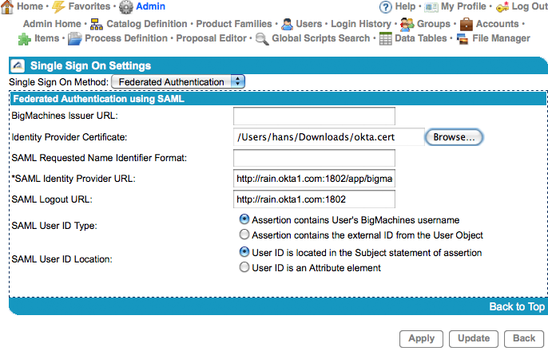
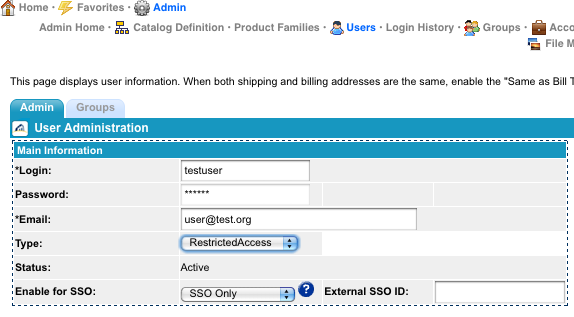

First, contact BigMachines to enable Single Sign-on for your site. After it's been enabled, navigate to the Single Sign On Setup page: sign in to your BigMachines admin account, select Admin from the top left, and select Single Sign-On under User and Company Administration on the right-hand side of the page.
On the Single Sign On Setup page:
Set Single Sign On Method to Federated Authentication.
Enter your BigMachines Issuer URL. It should be in the following format:https://customername.bigmachines.com.
Download your BigMachines verification certificate and then upload it in the Verification certificate section
Sign in to the Okta Admin app to have this variable generated for you.Leave SAML Requested Name Identifier Format blank.
Copy and paste the following into SAML Identity Provider URL:
Sign in to the Okta Admin app to have this variable generated for you.Copy and paste the following into Logout Redirect URL:
Sign in to the Okta Admin app to have this variable generated for you.Leave the SAML User ID Type and SAML User ID Location as the defaults
Press Apply

You must also enable single sign-on for your users:
From the Admin > Users page, select a Login from the left-hand column
Set Enable for SSO to Enabled for SSO or SSO Only.
Leave External SSO ID blank.

Your users are ready to single sign-on to BigMachines!
You can assign BigMachines access to users from their user profile.